Maridatge: Cava Oriol Rosell Brut Nature Reserva 20 mesos D.O. Cava
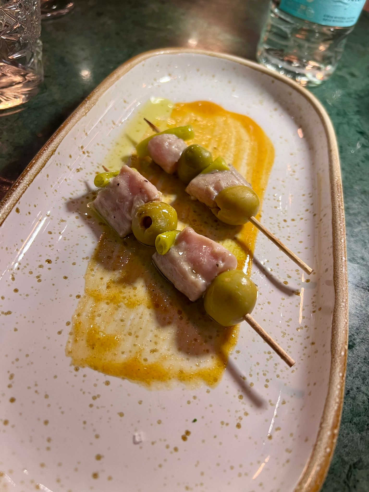
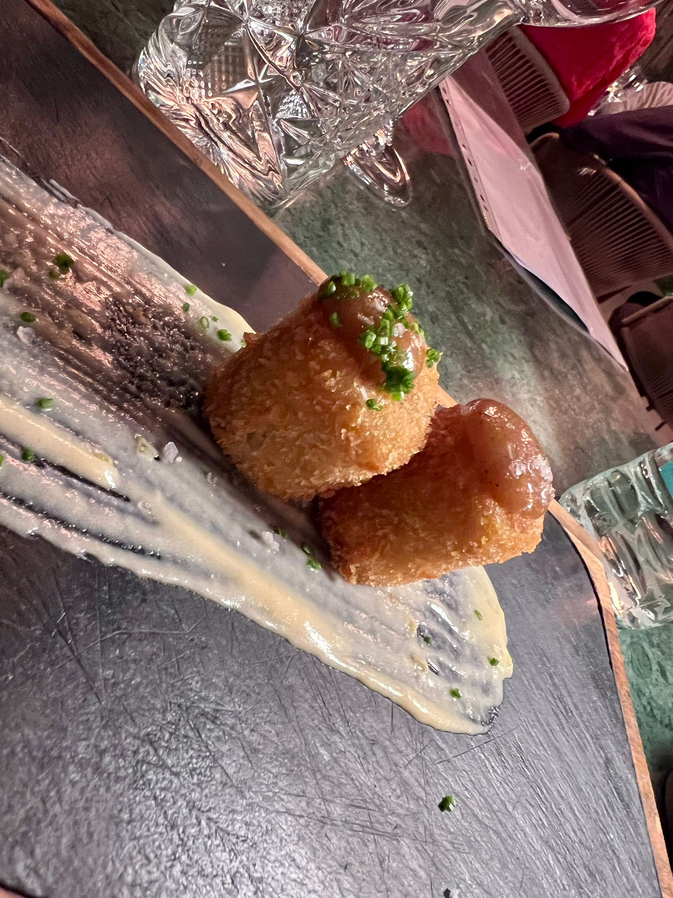
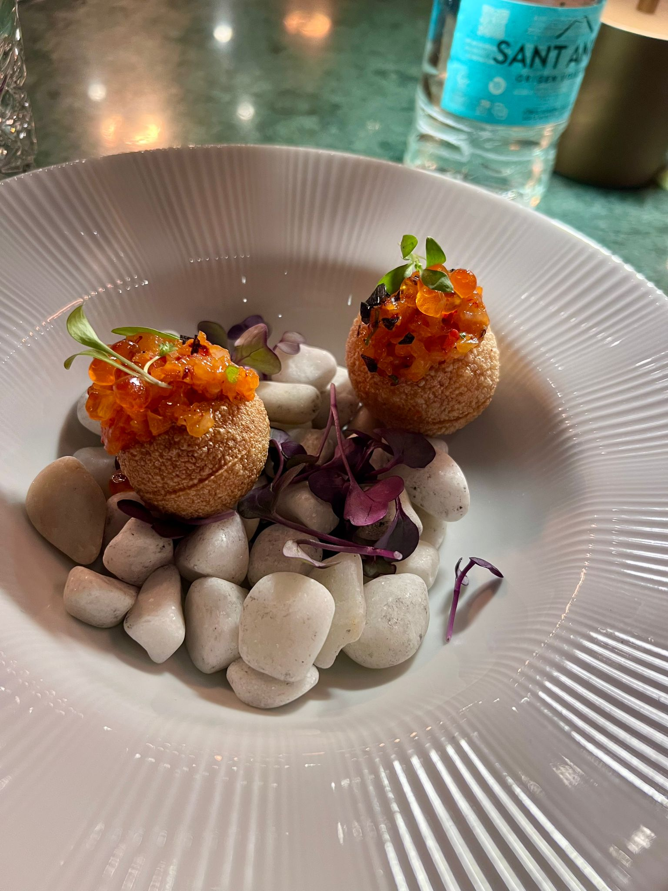
· · ·
Maridatge: Picasoques Blanc 2024 — Montsant
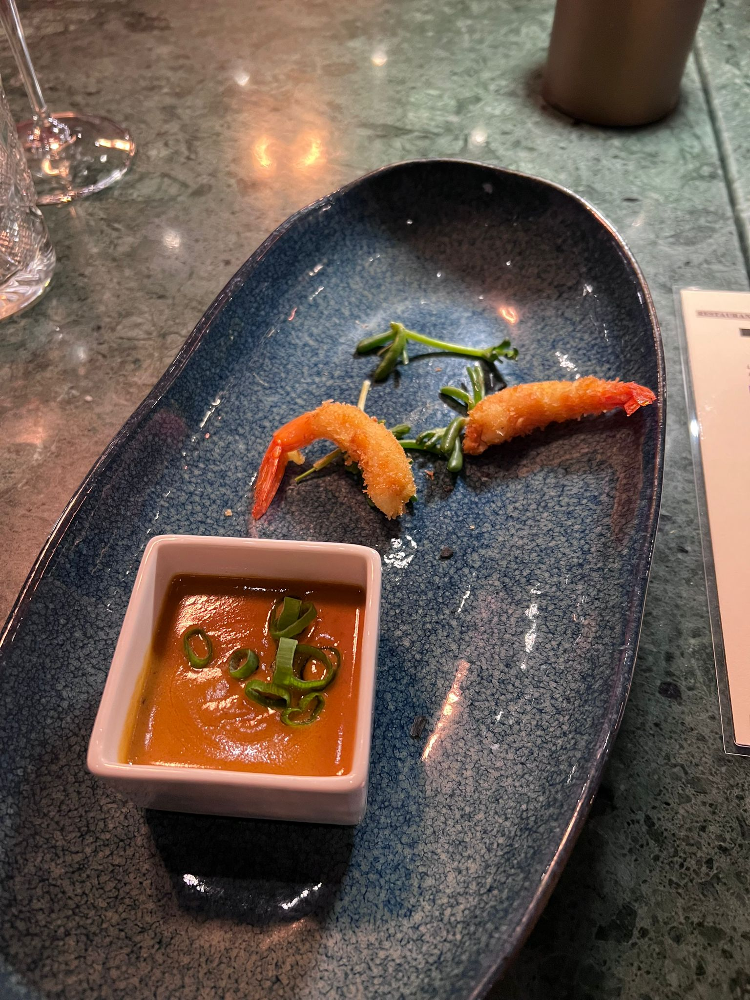
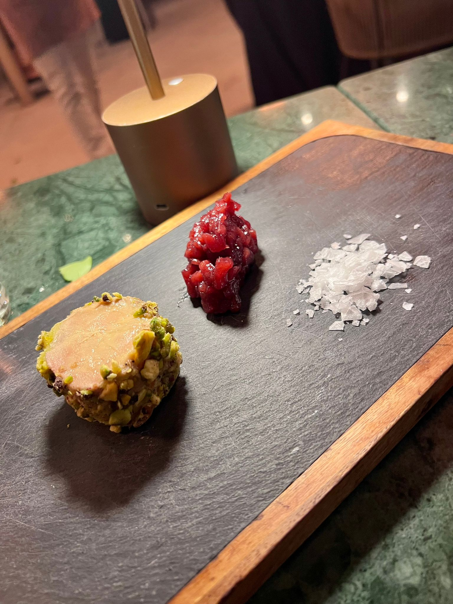
Maridatge: Picasoques Negre 2025 — Montsant
· · ·
Maridatge: Aucalà Blanc 2019 Magnum — Terra Alta
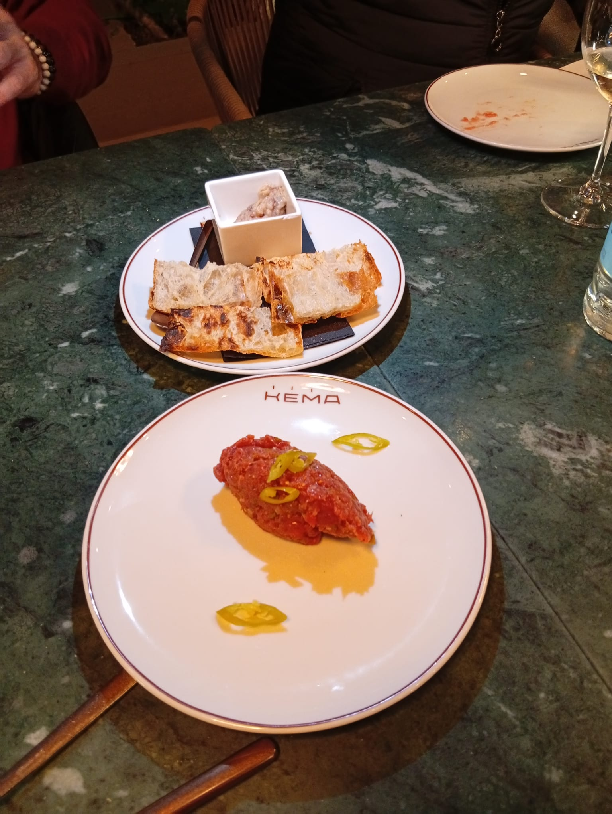
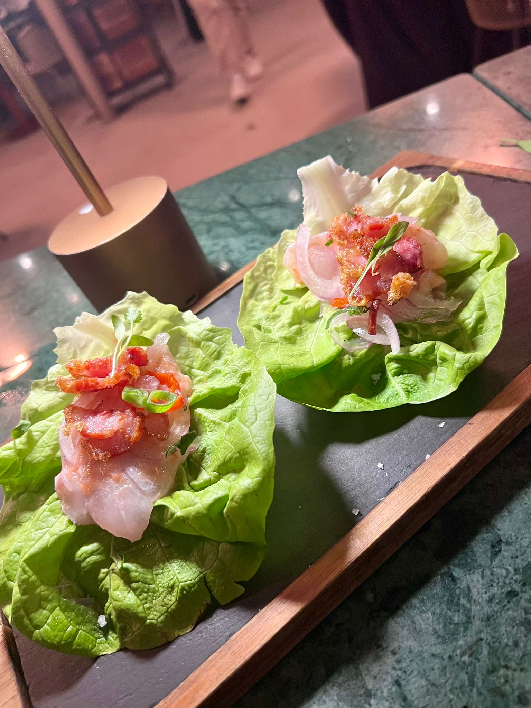
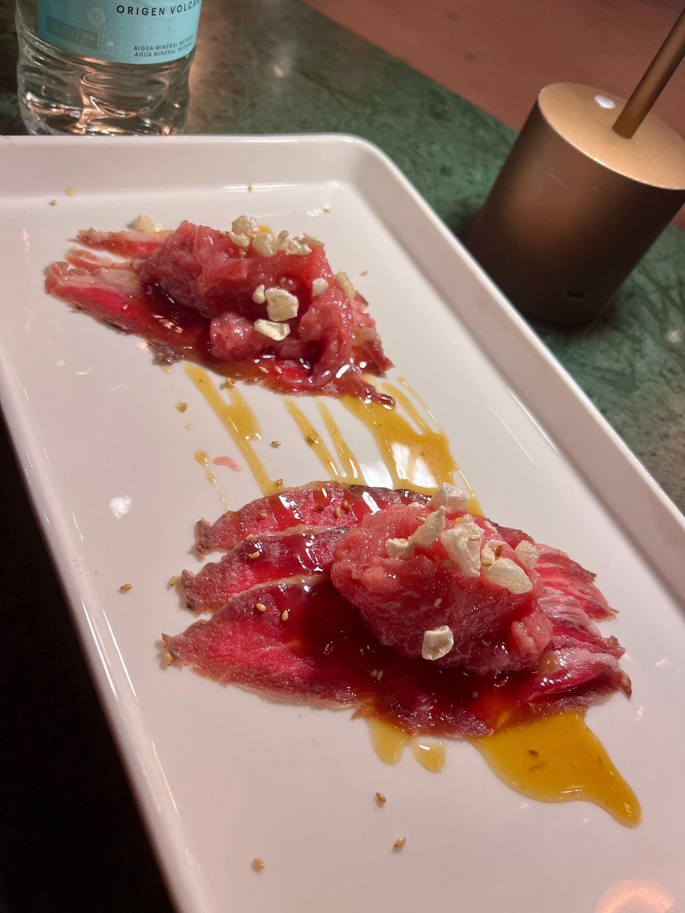
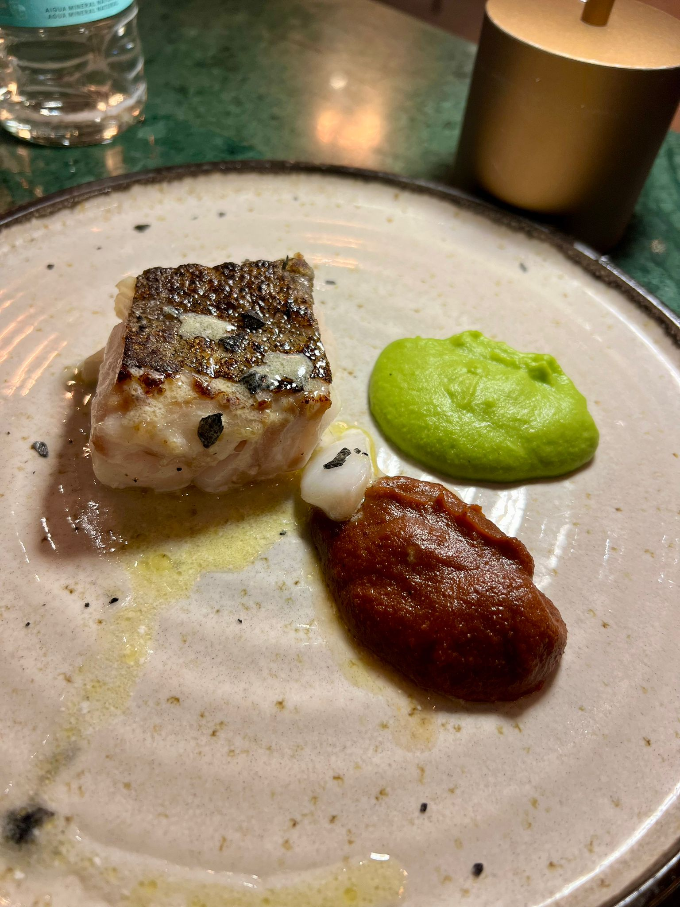
Maridatge: Aucalà Negre 2023 Magnum — Terra Alta
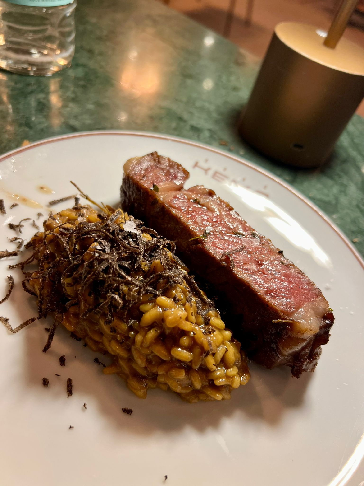
· · ·
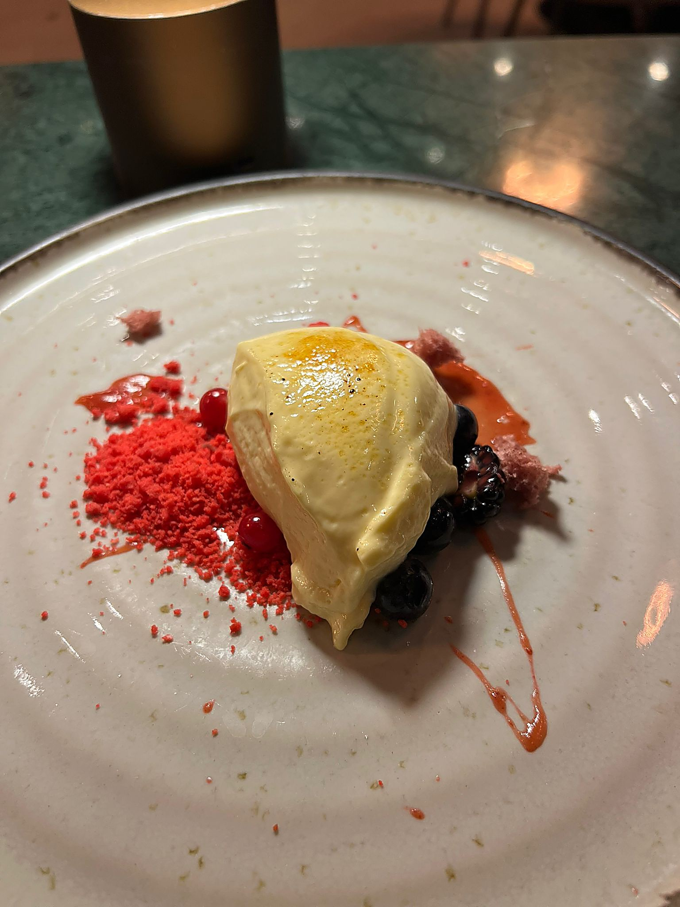
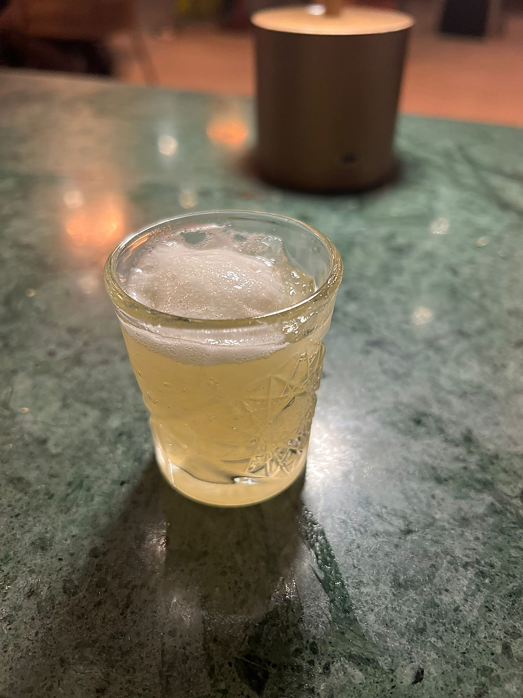
Maridatge: Vi Dolç de Foc Espurnes
Obertura
Cava Oriol Rosell
Brut Nature Reserva 20m
Brut Nature Reserva 20m
D.O. Cava
Intermezzo
Picasoques Blanc 2024
Montsant
Intermezzo II
Picasoques Negre 2025
Montsant
Àries
Aucalà Blanc 2019 Magnum
Terra Alta
Àries II
Aucalà Negre 2023 Magnum
Terra Alta
Finale
Vi Dolç de Foc Espurnes
Postre

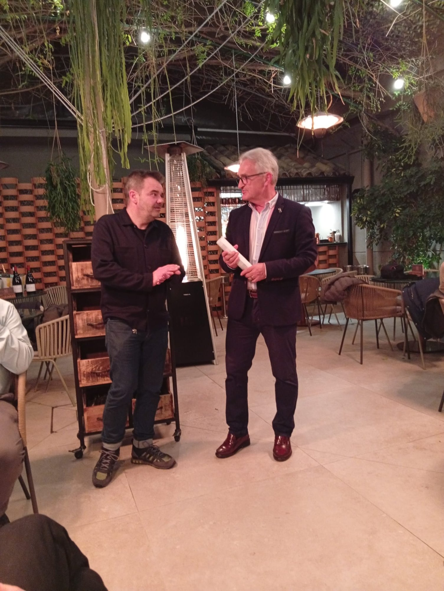
Kema · Cambrils